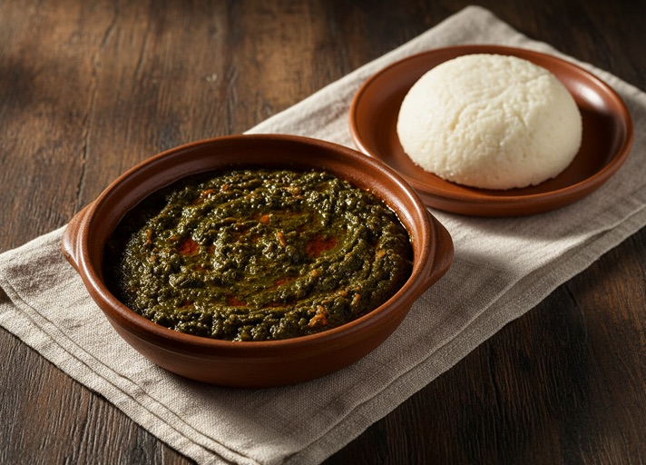

DR Congo · Central Africa
Pondu
Patience, a pot, and a taste of Congo.
Pondu, also called saka-saka in some communities, is a cassava-leaf stew deeply rooted in Congolese cooking. This plant-based version slowly softens the leaves with palm oil, onion, and aubergine. Every household has its own rhythm.
From the Tastes of Africa kitchen

- Prep
- 15 min
- Cook
- 95 min
- Serves
- 4
- Level
- Unhurried
Ingredients
Quantities shown for 4 people. Adjust with − / +.
For the stew
To serve
Let’s cook.
Take your time, taste as you go. Tap each step to open or close it.
-
Check the packet instructions before you start. Put the thawed, commercially processed cassava leaves in a large saucepan with the water. Bring to a full boil, uncovered. Never taste raw leaves.
-
Add the onion and aubergine. Keep at a steady bubbling simmer, partly covered, for at least 90 minutes, or longer if the leaf supplier instructs. Stir regularly and add water to keep the leaves submerged while cooking.
-
After 60 minutes of cooking, stir in the palm oil, spring onions, and salt. Add the whole pepper, if using, without piercing it. Continue the cooking time; do not shorten it because the leaves look tender.
-
Once the full safe cooking time is complete, the leaves should be very tender. Remove the whole pepper. Simmer for another 5 minutes to thicken if needed, then taste and adjust the salt. Spoon into a warm bowl.
Bring it to the table
Serve hot with fufu, kwanga, or plain rice. Pondu is often one part of a wider meal; its pairings and additions vary across the Democratic Republic of the Congo and neighboring communities.
Make a little extra
Cool promptly and refrigerate in a covered container within 2 hours. Keep for up to 3 days. Reheat until steaming hot throughout, adding a splash of water if the stew has thickened.